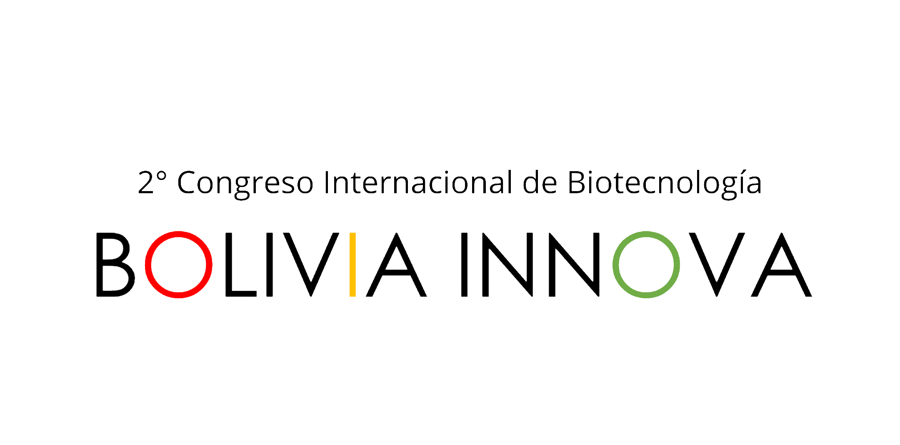

INAGURACION
BIO-REFINERIA
BIODIVERSIDAD
| VIERNES 21 de Agosto | ACTIVIDAD | PRESENTADOR | TEMA | |
|---|---|---|---|---|
| 17:00 - 17:30 | ACTO INAUGURACIÓN | COMISIÓN CIENTÍFICA COMISIÓN ORGANIZADORA | ORADORES: Representante INNOVA-BOLIVIA
Representante Comité científico local Presentación de la plataforma |
|
| 17:30 - 18:30 | CONFERENCIA DE APERTURA | Ph.D. Drew Endy | Building with biology: Citizenship of and with 21st-century biotechnology | |
| 18:30 - 19:30 | CONFERENCIA MAGISTRAL 1 | Ph.D. Wayne Parrot | Innovación en la agricultura para alimentar al mundo |
| SABADO 22 de agosto | ACTIVIDAD | PRESENTADOR | TEMA | |
|---|---|---|---|---|
| 9:00 - 10:00 | CONFERENCIA MAGISTRAL 3 | Rafael Aramendis | Estrategia de bioeconomía en Colombia y otros países de la región | |
| 10:00 - 11:00 | CONFERENCIA MAGISTRAL 4 | Ph.D. Javier Linares-Pasten | Bases moleculares para la biorefinería de biomasa lignocelulósica | |
| 11:00 - 11:30 | PAUSA | |||
| 11:30 - 12:00 | Conferencia 1 | Ph.D. Daniel Salas Veizaga | Tecnología recombinante: una experiencia boliviano-sueca | |
| 12:00 -12:30 | Conferencia 2 | Msc. Karen Cabero Tapia | Exploración del potencial enzimático en hongos nativos del altiplano Boliviano en la degradación de biomasa: Bionectria e Hypocrea cepas aisladas de la quinua y la paja brava | |
| 12:30 - 14:30 | ALMUERZO | |||
| 14:30 - 15:00 | Conferencia 3 | Ph.D. Patricia Mollinedo | Mejora en la efectividad de la enzima alfa amilasa aislada de Aspergillus orizae | |
| 15:00 - 15:30 | Conferencia 4 | Leonardo Emanuel Campuzano Rodriguez | Utilización de cianobacterias del Altiplano boliviano en armado de celdas solares fotovoltáicas | |
| 15:30 - 16:00 | PAUSA | |||
| 16:00 - 16:30 | Conferencia 5 | Ph.D. Cristhian Carrasco Villanueva | Surface response analysis for establishment of optimal process conditions for simultaneous production for biomass and extracellular biopolymer from pretreated brewery residues by Candida maltosa fermentation | |
| 16:30 - 17:00 | Conferencia 6 | Rolando Contreras | Estrategias en el proceso de fermentación aplicados a la elaboración de cerveza a nivel industrial | |
| 17:00 - 17:40 | PAUSA | |||
| 17:40 - 18:00 | Charla Informativa 1 | PhD. Ery Odette Fukushima | Ingeniería en Biotecnología Universidad Regional Amazónica IKIAM | |
| 18:00 - 18:20 | Charla Informativa 2 | Ph.D. Natalia Montellano | Presentación de la carrera en Ingeniería en Biotecnología Universidad Católica Boliviana - Santa Cruz | |
| 18:30 - 19:10 | TALLER 1 | iGEM Bolivia | La importancia de la bioseguridad en el trabajo de laboratorio | |
| 19:10 - 20:15 | Café con ciencia 1 | Gabriela Rivadeneira
Lilian González Lucia Alvarado Arnez |
Eventos científicos en pandemia ¿qué hemos aprendido? | |
| DOMINGO 23 de agosto | ACTIVIDAD | PRESENTADOR | TEMA | |
|---|---|---|---|---|
| 9:00 - 10:00 | CONFERENCIA MAGISTRAL 5 | Ph.D. Jorge Quillaguamán | El metagenoma de una laguna urbana contaminada en Cochabamba como reflejo de la diversidad microbiana patógena, sus genes de resistencia a antibióticos y genes de virulencia | |
| 10:00 - 10:30 | Conferencia 7 | Ph.D. Cesar Perez Fernandez | El papel del ARN regulatorio en la adaptación de comunidades microbianas al estrés ambiental | |
| 10:30-11:00 | PAUSA | |||
| 11:00 - 11:30 | Conferencia 8 | Pablo Alfaro | Biodiversidad Microbiana y Biotecnología en Bolivia | |
| 11:30 - 12:00 | Conferencia 9 | Luis Alejandro Romero Soto | Potencial metabólico de la halófila Yangia sp. para la coproducción de biopolímeros endo (PHB) y extracelulares (EPS) a partir de diversos sustratos | |
| 12:00 - 12:30 | Conferencia 10 | Diego Alejandro Miranda | Obtención de exopolisacáridos a partir de bacterias halotolerantes provenientes del Salar de Uyuni (Bolivia) | |
| 12:30 - 14:00 | ALMUERZO | |||
| 14:00 - 14:30 | Conferencia 11 | M.Sc. Apolonia Rodríguez Gonzales | Identificación de Comunidades Microbianas que Potencialmente llevan a cabo Biorremediación de Hidrocarburos a Partir de Suelo Contaminado por Petróleo de Pasivos Ambientales, por Técnicas de Secuenciación de Segunda Generación | |
| 14:30 - 15:00 | Conferencia 12 | Ph.D. Cristhian Carrasco Villanueva | Aprovechamiento de la biodiversidad microbiana: Pruebas de efectividad de tratamiento de residuos hidrocarburíferos para el diseño de una planta piloto (Caso Senkata-YPFB) | |
| 15:00 - 15:30 | PAUSA | |||
| 15:30 - 16:00 | Conferencia 13 | Daniel Dominguez | La importancia de la Biotecnología para el desarrollo de Latinoamérica | |
| 16:00 - 16:30 | Conferencia 14 | M. Sc. Teresa Ávila Alba | Técnicas moleculares para estudio de diversidad genética | |
| 16:30 - 17:00 | Conferencia 15 | Yanira Lizeth Paredes Estrada | Aplicaciones biotecnológicas en Wolbachia pipientis y su uso para la erradicación de vectores de contagio causantes de enfermedades víricas | |
| 17:00 - 17:30 | PAUSA | |||
| 17:30 - 19:00 | Cursillo | iGEM Bolivia | Revisión estado del arte en Biotecnología en Bolivia | |
| Lunes 24 | 17:00 - 19:00 | SESIÓN DE PÓSTERS 1 y 2 |
|---|---|---|
| Martes 25 | 17:00 - 19:00 | SESIÓN DE PÓSTERS 3 y 4 |
| Míercoles 26 | 17:00 - 19:30 | SESIÓN DE PÓSTERS 5 y 6 |
Si usted ya se registró por formulario, puede descargar la app de Whova para acceder al evento.
For feature details, visit Whova
ACCEDA AL EVENTO MEDIANTE ESTE ENLACE (SOLO SI SE ENCUENTRA REGISTRADO)
AMBIENTAL
AGROALIMENTARIA
NORMATIVA
CANCER/FARMA
| JUEVES 27 de agosto | ACTIVIDAD | PRESENTADOR | TEMA | |
|---|---|---|---|---|
| 9:00 - 10:00 | CONFERENCIA MAGISTRAL 6 | M.Sc. Tamara Pozzo | El futuro del cuidado del cancer/cuidado del cancer coinducido por el paciente | |
| 10:00 - 11:00 | CONFERENCIA MAGISTRAL 7 | Ph.D. Fabricio Loayza | Develando las vulnerabilidades metabólicas del cáncer | |
| 11:00 - 11:30 | PAUSA | |||
| 11:30 - 12:00 | Conferencia 16 | Andrea Maria Torrico Ferufino | Auto-toma para la detección del ADN del virus del papiloma humano: un estudio preliminar de conformidad y viabilidad en Cochabamba-Bolivia | |
| 12:00 - 12:30 | Conferencia 17 | Pedro Eduardo Surriabre Dick | Desarrollo de una estrategia de bajo costo para la detección del Virus del Papiloma Humano en la prevención del cáncer de cuello uterino | |
| 12:30 - 14:00 | ALMUERZO | |||
| 14:00 - 14:30 | Conferencia 18 | Mariana Bustamante Eduardo | Caracterización molecular de células de cáncer de mama con capacidad normal o reducida de responder a la progesterona | |
| 14:30 - 15:00 | PAUSA | |||
| 15:00 - 15:20 | Charla Informativa 3 | Paola Montaño | El concurso iGEM y el equipo iGEM-Bolivia | |
| 15:20 - 15:40 | Charla Informativa 4 | Sebastían Bermúdez | Estudiantes y la divulgación científica - Journal Club, Ikiam | |
| 15:40 - 16:00 | PAUSA | |||
| 16:00 - 16:30 | Conferencia 19 | Roxana Quiroga Flores | Procesos de bioprecipitación de metales pesados y biorreducción de hierro (III)para el tratamiento de aguas ácidas de minas a escala laboratorio | |
| 16:30 - 17:00 | Conferencia 20 | Virginia Rigoberta Gonzales Mamani | Evaluación de procesos de producción de bioestruvita (MgNH 4 PO 4 •6H 2 O) para la recuperación de fósforo y nitrógeno del suero lácteo y magneso de la bischofita | |
| 17:00 - 17:30 | PAUSA | |||
| 17:30 - 18:00 | Conferencia 21 | Norman Huayhua Jurado | Aislamiento de bacterias lipolíticas a partir de biofilms de efluentes de restaurantes del distrito de Saylla-Cusco-Perú | |
| 18:00 - 18:30 | Conferencia 22 | Valeria Sanz Cárdenas | Potencial actividad biocontroladora de bacteriófagos aislados de muestras ambientales, frente a cepas de Escherichia coli multirresistentes | |
| VIERNES 28 de agosto | ACTIVIDAD | PRESENTADOR | TEMA | |
|---|---|---|---|---|
| 9:00 - 10:00 | CONFERENCIA MAGISTRAL 8 | Ph.D. Mauricio Peñarrieta | Investigación en química de alimentos y su perspectiva a nivel internacional | |
| 10:00 - 11:00 | CONFERENCIA MAGISTRAL 9 | Ph.D. Oscar Rollano | Utilizando la genómica para encontrar genes de resistencia a patógenos, caso de la quinua | |
| 11:00 - 11:30 | PAUSA | |||
| 11:30 - 12:00 | Conferencia 23 | Marcia Gabriela Rivadeneira Caballero | Detección molecular de la translocación 2NS en 19 variedades comerciales de Trigo (Triticum aestivum L.) | |
| 12:00 -12:30 | Conferencia 24 | Noemi Nancy Aguilar Vasquez | Identificación de microsatelites en maíz asociados con resistencia a achaparramiento (palmarado) | |
| 12:30 - 14:00 | ALMUERZO | |||
| 14:00 - 14:30 | Conferencia 25 | Edgar Esteban Gareca León | El uso de marcadores genéticos moleculares en la conservación de especies de plantas amenazadas | |
| 14:30 - 15:00 | Conferencia 26 | Mariela Terceros Suárez | Burkholderia glumae en el cultivo de arroz en Santa Cruz | |
| 15:00 - 15:30 | PAUSA | |||
| 15:30 - 16:00 | Conferencia 27 | Ariana Terán Cossio | Marcadores moleculares asociados a genes de resistencia al virus PVY y al nematodo quiste (Globodera pallida y Globodera rostochiensis) en variedades de papa (Solanum tuberosum l.) | |
| 16:00 - 16:30 | Conferencia 28 | Jimmy Casto Ciancas Jimenez | Efecto de los microorganismos en la solubilidad y disponibilidad del fósforo en cultivos extensivos de Santa Cruz | |
| 16:30 - 17:30 | PAUSA | |||
| 17:30 - 18:00 | Café con ciencia 2 | MSc. Teresa Ávila | Contribución de RedBio a la biotecnología en Bolivia | |
| 18:30 - 19:30 | Conversatorio 1 | Gabriela Rivadeneira | Potencial de la biotecnología como herramienta de respuesta a los incendios de la Chiquitania y la recuperación de suelos | |
| SABADO 29 de agosto | ACTIVIDAD | PRESENTADOR | TEMA | |
|---|---|---|---|---|
| 9:00 - 10:00 | CONFERENCIA MAGISTRAL 10 | Ph.D. Victor Acha | Nanoparticles of lignin. Preparation, characterization and applications | |
| 10:00 - 10:30 | Conferencia 30 | Roxana Quiroga Flores | Removal of metals from contaminated waters: Evaluating the use of synthetic adsorbents and green algae biomass | |
| 10:30-11:00 | PAUSA | |||
| 11:00 - 12:00 | CONFERENCIA MAGISTRAL 11 | Ph.D. Martín Lema | Regulación sobre la Edición Genética | |
| 12:00 - 14:00 | ALMUERZO | |||
| 14:00 - 14:20 | Charla Informativa 5 | Ramiro Jordán | Iniciativa de Ingeniería para la Paz | |
| 14:20 - 14:40 | Charla Informativa 6 | M.Sc. Luis Pozzo | Sistema de gestión de la investigación multidisciplinar para la innovación | |
| 14:40 - 14:50 | PAUSA | |||
| 14:50 - 15:30 | TALLER 2 | Sergio Moreira | Cerrando la brecha: Comunicando ciencia a una sociedad desinformada | |
| 15:30 - 15:40 | PAUSA | |||
| 14:50 - 15:30 | TALLER 3 | Jaime Ocampo | Desde la investigacion a una start up | |
| DOMINGO 30 de agosto | ACTIVIDAD | PRESENTADOR | TEMA | |
|---|---|---|---|---|
| 9:00 - 10:00 | CONFERENCIA MAGISTRAL 12 | Ph.D. Horacio V. Guzman | Perspectivas de modelamiento de virus y las propiedades físico-químicas del SARS-CoV-2 | |
| 10:00 - 10:30 | Conferencia 31 | Ph.D. Jorge Quillaguamán | Filogenia y caracterización de los genomas del SARS-CoV-2 obtenidos en Sudamérica | |
| 10:30-11:00 | PAUSA | |||
| 11:00 - 11:30 | Conferencia 32 | Ph.D. Julia Barreta Pinto | Diversidad genética de camelidos sudamericanos en Bolivia | |
| 11:30 - 12:00 | Conferencia 33 | M.Sc. Heidy Ferrari A | Desarrollo y evaluación de la aceptabilidad sensorial de un suplemento a base de fe-peptideos microencapsulados, dirigido a la salud de la mujer | |
| 12:00 - 12:30 | Conferencia 34 | Fernanda Aliaga Raduan | La respuesta metabólica anaeróbica en ratones y ratas diverge durante el proceso de aclimatación a la hipoxia | |
| 12:30 - 14:00 | ALMUERZO | |||
| 14:00 - 15:00 | CONFERENCIA MAGISTRAL 13 | Ph.D. Enrique Joffre | Genómica microbiana y enfermedades infecciosas | |
| 15:00 - 15:30 | PAUSA | |||
| 15:30 - 16:00 | Conferencia 35 | Jusdin Ruiz Umaña | Inactivación de cepas de Staphylococcus aureus procedentes de infecciones asociadas a prótesis articulares, mediante la herramienta CRISPR/Cas9 | |
| 16:00 - 16:30 | Conferencia 36 | Lucia Elena Alvarado Arnez | Asociación de polimorfismos en TYK2 (gen Tirosina quinasa) con carga viral y fibrosis avanzada en pacientes con Hepatitis C crónica | |
| 16:30 - 17:00 | PAUSA | |||
| 17:00 - 17:45 | CONFERENCIA CLAUSURA | Ph.D. María Mercedes Roca | OneHealth: un cambio de paradigma en el enfoque de la salud humana, animal, ambiental y agricola | |
Si usted ya se registró por formulario, puede descargar la app de Whova para acceder al evento.
For feature details, visit Whova
ACCEDA AL EVENTO MEDIANTE ESTE ENLACE (SOLO SI SE ENCUENTRA REGISTRADO)

